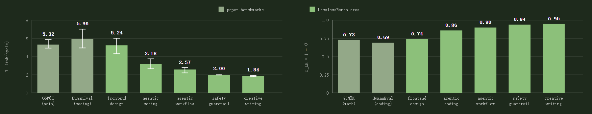
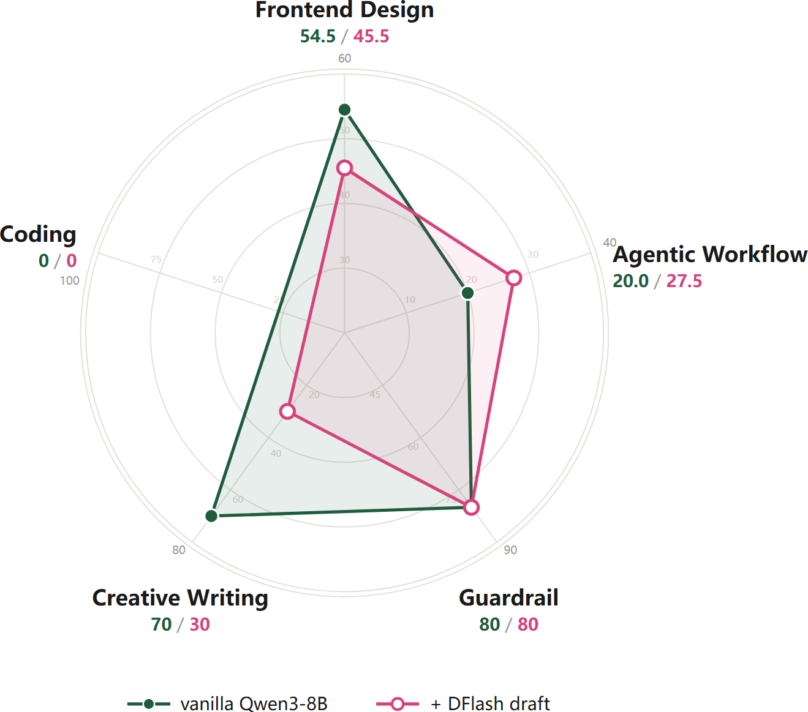

你每次让大模型生成文字,背后大概率跑着一个投机解码(speculative decoding)加速器：今天几乎所有托管LLM都靠它把吐字变快、把价格打低。它到底怎么做到『又快又无损』?
这份NeurIPS 2026 Education Track的交互大教程(约4.4万英文正文、6张表、大量可播放动画)把全貌摊开:先讲它为什么快、为何拒绝采样统计无损;再按EAGLE-3→DFlash→DSpark→DFlash 2四代演进看每代拔哪个瓶颈;最后深挖『无损在论文成立、在真实部署里还成立吗、在我们没测的83% 流量里呢』。原文交互动画多,本文以文字还原其机制结论,并以数据图保留落地成果。
不含原文的『动手部署Lab逐命令』与附录(术语表/A.2/A.3/References)：那些是教你租GPU自己跑的导览,不属于知识主干。
几乎每个LLM都一次吐一个token,这叫自回归解码：它是推理最大的瓶颈:要产n个token,得让几百亿参数前向跑n趟。
投机解码(speculative decoding)(Leviathan et al., 2023)就是来加速的:一个轻量小模型先草拟出接下来几个token,再让目标模型逐验,接受或拒绝。关键:验过的输出与目标模型自身分布完全相同(Chen et al., 2023)：这就是它『理论上无损』的出处。
开场动画(原文可播放,此处还原其意):自回归的画家逐像素作画,扩散画家一次性把整张画布同时去噪。于是抛出核心问题:能否照diffusion那样,把一串token『并行地一次性草拟』,而不再逐个draft?
第一代投机解码用小draft提速,但草拟本身仍逐token。视觉这边diffusion早已大规模并行落地;作者追问:diffusion式draft能否并行提出整块token,把推理再推快一层：这是后文主线。
如今投机解码塞在几乎所有托管LLM下面:OpenAI 2026给GPT-5.6 Luna降价80%(部分归功于重设计的draft);Anthropic 'fast mode' 把同一Claude Opus溢价档跑快2.5×;DeepSeek引擎随附DSpark +51% 吞吐;Kimi K3随发自家draft。它是LLM栈基石话题。
门槛极低:只要知道『一次吐一个token』就够了。三条主线:① 怎么演化;② 何时依旧无损;③ 接下来怎么做。
轻量draft赌出接下来 γ 个token(通常3–8),目标模型在单次前向里打包验证全部 γ 个,成本≈只解一个。速度来自三处:draft越准被接受越多 / 验证越不浪费算力 / 草拟越能并行。Figure 1(页内为动态图,文字示意):朴素解码一pass一个token;投机让草稿提出短块、目标整段校验。
快有了,可为什么『无损』?答案靠验证里走的拒绝采样(rejection sampling):目标模型把每个draft token对照自己的概率,要么接受要么拒绝。它让无损与draft强弱无关：draft再废,输出仍服从目标模型自身分布(Leviathan et al. App.A.1)。无损与否取决于拒绝采样跑得有多严,是否真损放到第二节讨论。Figure 2(动态示意)走一遍单次验证:每个draft token以概率min(1,p/q) 接受;一旦拒绝就按残差norm(max(0,p−q)) 重采样一个,并把其后整段draft丢弃。
同一规则用伪代码写清(target的概率为p(x),draft为q(x)):
# p(x): target model's probability for token x
# q(x): draft model's probability for token x
for each draft token x:
accept x with probability min(1, p(x) / q(x))
# q(x) <= p(x): always accepted
# q(x) > p(x): accepted with probability p(x)/q(x)
on the first rejection:
discard the remaining draft tokens
resample one token from the residual p'(x) = norm( max(0, p(x) - q(x)) )统计上看,一个token能被发出只有两条路:直接来自被接受的draft(即accepted mass),或来自rejection后target的重采样(residual mass)。两者相加与target原本的概率一致：推导一目了然:
P(x is emitted) = q(x)*min(1, p(x)/q(x)) # accepted mass = min(p(x), q(x))
+ P(reject)*p'(x) # residual mass = max(0, p(x) - q(x))
= min(p(x), q(x)) + max(0, p(x) - q(x)) = p(x) # 与 target 概率相同Table 1给出六个指标的来源：其中三个是决定性量:drafting time、verification time、acceptance length;另外三个(解码加速、每token时延、tok/s)由它们推出。
| Metric | Definition | Determined by |
|---|---|---|
| Decoding speedup (η) | η = L_target / L 相对自回归基线 | 单token时延L与基线L_target |
| Per-token latency (L) | L = (T_draft + T_verify) / τ 每个出新token的平均时间 | T_draft、T_verify、接受长度 τ |
| T_draft | draft模型用于『出草稿』的时间 | 其规模 + 需要的草稿数:模型越小越快到 |
| T_verify | 目标模型验证所花时间 | 目标规模 + 一次验多少草稿 |
| Tokens per second | ≈ 1 / L 用户体感吞吐 | 单token时延L |
| Acceptance length (τ) | 平均每次验证能通过的草稿token数 | draft模仿目标有多像:猜得越近越存得多 |
2023论文(Leviathan, Thm 3.5)给出一条连接:接受率等于1减去draft与target分布之间的总变差距离：α = 1 − E[D_LK(p,q)];同一推导再给出Table1里 τ 与 α 的关系:τ = (1 − α^(γ+1))/(1 − α),γ 是每轮验证草稿数。
2023之后的一切都继承这条定理:后来的论文基本不再亲自证无损：只要验证守住『accept-or-resample』,draft再弱输出也无损。Thm 3.5真正多给的是怎么读速度数字:拿到一个 τ,就能反推 α;而 α = 1 − 某种分布距离：所以『读 τ』== 在读draft分布离target有多近。严格验证下,这个距离只决定速度;一旦放宽接受阈值,距离就会开始伤输出质量(第二节细说)。
单卡B200跑Qwen3-8B+SGLang,朴素解码约230 tok/s;哈利波特第一卷约10万token,要7分多钟。挂DFlash draft后对话文本约2.75× 快(Chen et al., 2026),约630 tok/s,压进3分钟。纸上数字走一遍:
T_verify = 4.3 ms # 目标一次前向 (Qwen3-8B @230 tok/s ≈ 4.3ms/token)
T_draft = 1.3 ms # drafting 成本
τ = 3 tokens # 每次验证被接受数
L = (1.3 + 4.3)/3 ≈ 1.9 ms/token # 每 token 时延
η = 4.3 / 1.9 ≈ 2.3x # 相对朴素解码加速回到三可变:drafting time / verification time / acceptance length。. Four generations每代正好拆掉一个瓶颈:EAGLE-3拉长接受长度,DFlash砍drafting time,DSpark砍verification time,DFlash 2再把接受推高一档。按顺序逐个看。
2023年代用一个独立小LLM当draft,它从零瞎猜,还要多养一个大模型=多占显存。Medusa(Cai+24)换成在目标上多挂预测头;EAGLE(Li+24)进一步把『多个头』缩成一个decoder层,读目标的隐藏特征然后自回归草拟(Figure 3)。之所以重点讲EAGLE-3,因为它是产线上真在跑的那个。
更早的EAGLE用更多训练数据却拉不长接受长度,根因在训练目标:旧draft层既被训来预测『目标下一个token』又预测『目标下一层隐藏特征』,等于逼模型去复刻目标特征向量：能力全花在抄特征而不是把token猜得更准。
EAGLE-3(Li et al.2025)把目标改成『less is more』:放弃特征预测、直接预测token,但把特征从目标的low/middle/high三层融合(而非只用顶层)。代价是引出一个新问题：推理时draft吃自己输出,分布会从训练分布漂走,第二步起接受就开始崩。EAGLE-3用training-time test(训练时就让draft展开多步、吃自己的输出)治愈:让训练分布 == 推理分布。
结果是更长的接受:EAGLE-3最高比朴素解码快6.5×、比EAGLE-2快约1.4×;投遍SGLang/vLLM生产框架：它是最被广泛采用的draft之一。瓶颈还剩一个:小draft快,但依旧一次出一个。能并行草拟吗?
DFlash(Chen et al.2026)的核心决策就是让草拟并行:整块一次生成,而非逐个token。它借的是diffusion的『diffusion block drafting』:图像/视频生成里,diffusion从纯噪音出发、对所有像素并行去噪,一次精修整张画布。文本diffusion把这思路带过来(Arriola+25):把噪音换成MASK token,让模型并行预测每个遮罩位。DFlash照搬到草拟:draft块以一整行MASK起步。Figure 4(动画/示意):EAGLE-3一个接一个串行草拟,DFlash一次去噪一整块MASK,并且把目标模型的上下文特征『每块注入一次』。
diffusion式草拟带来两个好处:
① 一次前向出整块 → drafting 快、成本随块长几乎持平(flat)
AR draft: 出 γ token 要 γ 次前向;DFlash: 一次前向并不断,块增大成本不大变。
flat 成本还换来容量: EAGLE-3 为省时只留 1 层, DFlash 可以用 5 层还更快。
5 层出 16 token 在 drafting cost 与 acceptance 上双胜 EAGLE-3 单层出 8。
② 吃目标上下文特征 → draft 更准
只喂『最后 token 的 fused 特征』有两个坑:它只带单位置、且只在栈底加一次会越深越淡。
DFlash 把每个已验前缀位置的目标特征做成 K/V,注入 draft 每层 KV cache
(Figure 6) → 填块时每层都见完整前缀 → 接受率更高。前面几家都在打磨draft机制;DSpark(DeepSeek)反过来优化验证机制:只验证值得验的草稿。它在并行draft主干上加两个模块(Figure 7):一个轻量sequential head恢复块内依赖(后位置可依赖前面);一个confidence head估每个draft前缀多大概率存活,配一个load-aware scheduler按存活率与引擎吞吐画像为每个请求定验证长度。
于是DSpark砍的是验证时间。离线它比SOTA drafter在接受长度上提16–31%;部署进DeepSeek-V4生产栈,在匹配吞吐下把单人生成提速60–85%(对比MTP-1基线)。DeepSeek同时开源了DSpark权重与DeepSpec(一个训练repo)。
但DSpark的sequential head又是一个token一个token走：为了并行草拟而放弃的,现在又还了回去?值得问:换取舍值不值。
DSpark用顺序头解接受衰减;DFlash 2(Inco)主张草拟就该保持并行,用并行selector换掉顺序头。理由是成本差距:顺序头在每个位置重算一遍整词表分布,77.8M参数 / 9.6% 时延,而selector只要2.0M / 0.6%。
使并行选择可行的是另一个观察：对的token往往早就在候选里了。给一个已验证前缀『The fastest way to』加4个遮罩位:每位各自top候选拼起来却得到『get to to school』(两个相邻都挑了同一个词,句子断掉);而通顺的『get to school quickly』其实一直在候选列表里躺着。Inco量化这值多少:若一个完美judge总能从top16里挑对,接受长度会从4.27跳到6.79。所以‘少见其实是错judge’:缺的不是对的token,是判断：而选择判断天然可并行。Figure 8(动态)展示它的两件新增:
◆ path selector：挑一条通顺的路径。给相邻候选对打分 = drafter 自己的 logit
+ 一个兼容项(把前 token 与候选压成 256 维向量, 在 context gate 下比对)。
从『最后一个已验 token』出发走最高分路径 → 替换独立的逐位猜测。 2M 参数 / 0.6% 时延。
◆ two-tap convolutions：让邻居一致。在每个 attention 与 FFN 子层前后插入, 把每位置
与它的前一个混起来, 首位读『最后已验 token』。attention 看长程, conv 管块内局部
一致: 只回看一格就换回『多十层』收益的一大半 ： 块尾衰减是局部问题, 局部修就够了。DFlash 2把接受长度从4.92抬到5.97(每轮验证, Qwen3.5-4B),即比DFlash多21% 产出、只加1.3% 时延;在Qwen3.8-27B上相对自回归给2.7–3.4× 吞吐(Inco)。
走过四代架构,作者问读者:下个SOTA会是你想的那个方向吗?
四家都介绍完,终于能同场竞技了：在同一个目标模型上,same句子让EAGLE-3/DFlash/DSpark/DFlash2各自解码(Figure 9动画示意;数值为作者在单张H100自测,DFlash 2用Inco的2.7–3.4×)。
四家的出厂速览如下(τ=每次验证接受长度):
| Method | τ | Speedup | Engines | Official drafters |
|---|---|---|---|---|
| EAGLE-3 | 2.66 | 6.5x | SGLang, vLLM | Llama, Qwen, DeepSeek V3, Kimi K2.5 |
| DFlash | 3.11 | >6x | SGLang, vLLM, TRT-LLM, llama.cpp | Meta, Poolside, NVIDIA, Xiaomi |
| DSpark | 3.72 | 60–85% vs MTP-1 | DeepSeek-V4 stack | GLM-5.2, Kimi K3 (RedHat) |
| DFlash 2 | ~3.76 (+21% vs DFlash, reported) | 2.7–3.4x | SGLang, vLLM, llama.cpp, Ollama | Qwen3.8-27B, Muse Glimmer |
自2025年3月起EAGLE-3草拟头就给Llama/Qwen/DeepSeek V3发货;2026春DFlash已并入SGLang/vLLM/TRT-LLM/llama.cpp,NVIDIA报在Blackwell上用它最高15× 吞吐;DFlash七个月被下载350万+次。2026年中各家开始随模型一起发官方drafter:Meta/Poolside/NVIDIA发DFlash的、Red Hat发DSpark的、7月Kimi K3随model出货自家post-training训出的speculator。
它不总是有用(昂贵面):draft本身额外占显存(内存/显存紧张的机器可能反亏);每轮循环先付drafting成本(draft猜差接受低时加速可跌破1×);重负载下GPU已被batching占满、没闲算力去投机,引擎才会在高并发时自动关掉它。
第一节看了它如何保证无损加速;这一节要看『何时成立、何时不成立』:(2.1)论文里的无损;(2.2)部署里的无损;(2.3)一个测量数学/编码以外域是否无损的case：LosslessBench。
即便在原始论文里,无损也不是无条件:比如EAGLE-3只在温度0上跟Medusa比,放宽接受的那个变体其实并不再无损：因为Medusa这类方法无损与否取决于温度与接受规则多严。
温度0时解码确定:目标总选最高概率token,draft只在完全对上时才被接受,此时无损成立。温度1时解码随机:同一位置可有多个合法答案;Medusa接受任何越过阈值的draft token,于是输出mix跟着draft的偏好走、偏离target：分布被拉偏,不再无损。
举个两只狗/猫的例子:提示『the best pet is a ___』,target给cat 0.5、dog 0.5,draft偏爱dog。拒绝采样下:draft 80% 提dog,但target只接受8次dog提议里的5次(p/q=0.5/0.8)并重采样其余,最终dog仍50%;宽松规则下:每个过阈值dog都被接受,输出偏向draft宠儿：dog变80%。Figure 10(动画)正是这组对照。
无损还依赖验证怎么被调度。调度器不当地引入selection bias:接受率涨了,而输出分布早已偏移：这就不再无损。更具体讲:调度器决定token k要不要验,这个决定只能用前缀1..k−1,绝不能用k之后的B去决定要不要验k(Figure 11例子)。
DSpark几乎违反这条非预期规则。 它把draft block联合调度:为保吞吐,决定接纳k时会参考k+1的得分,而k+1的得分来自草出的k → 等于间接用了k自己决定k,违反non-anticipating：论文称之为selection bias。DSpark的修法:一旦预期吞吐下滑就停止更深搜索,让截断只依赖已处理前缀 → 消除selection bias(细节回DeepSeek论文Sec3.2.2/A反例)。
生产里用户/公司可调很多参数,有些决定仍否无损。两大引擎口径不一:
SGLang:默认strict验证,接受阈值出厂1.0。用户可下调以更暴力地多接受token：但这种『为速度换质量』一旦发生,解码就不再是无损。vLLM:把无损拆成三层:(i)理论无损(到硬件数值精度上限);(ii)算法无损(靠rejection sampler收敛测试确认);(iii)输出稳定不被承诺。前两层论文证明与引擎测试都罩着,第三层没有:光改个batch size都可能改logprobs、把输出分布拉走。
DSpark是活例子:DeepSeek上生产时,调度器跟真实基础设施撞出两处冲突(论文Sec5.2),他们都得改设计才守住无损:① 算法假设硬件吞吐曲线平滑,实际GPU吞吐『锯齿状』：修法是去掉early stop、在整个锯齿曲线上搜;② 算法想每一步定验证几个token,但服务引擎要batch size固定：修法是异步调度、用两步前的信心预测来定batch size,这也顺带让决定看不到当前token。
还不止:生产栈远超投机解码本身：权重(有损)量化、压缩(有损)……其上叠加KV-cache-aware路由与prefill/decode解耦。如此多因素层层叠,整个部署到底还(整体)无损很难拍板。
即便上面全做对(严格阈值、非预判调度、按引擎重设计),又怎么证明它仍服务终端目标、且覆盖不同域?无损证据只存在于被测试过的域里：而现在,SOTA投机方法全都被测在编码、聊天、数学三块。
EAGLE-3/DFlash/DSpark全在GSM8K、MATH-500、AIME25、HumanEval、MBPP、LiveCodeBench、MT-Bench、Alpaca、Arena-Hard上报告接受长度与加速;DeepSpec用同一套9个基准(下表)。这些只盖了一小撮真实任务;再往外,无损的实证证据一片空白。Figure 12(页内为OpenRouter流量按任务类型分布动画)指出:被测域只占token用量的17%,其余83% 从没被投机解码量过。
| Method | Math | Code | Chat / instruction | Other |
|---|---|---|---|---|
| EAGLE-3 (2025) | GSM8K | HumanEval | MT-Bench, Alpaca | CNN/Daily Mail (summ) |
| DFlash (2026) | GSM8K, MATH-500, AIME25 | HumanEval, MBPP, LiveCodeBench | MT-Bench, Alpaca | ： |
| DSpark (2026) | GSM8K, MATH-500, AIME25 | HumanEval, MBPP, LiveCodeBench | MT-Bench, Alpaca, Arena-Hard | DeepSeek-V4 live traffic (speed only) |
| DeepSpec harness | gsm8k, math500, aime25 | humaneval, mbpp, livecodebench | mt-bench, alpaca, arena-hard-v2 | ： |
编码/数学/聊天之外的83% 域,无损真的还成立吗?作者没有只停在问号：他们亲自拉了LosslessBench。
为了在编码/数学之外也去量spec decoding与推理加速,作者建了LosslessBench,横跨五域(各用自己的基准与指标):前端→OpenDesign(每页GPT-4o视觉judge对截图打『对齐/美学/结构』分,browser agent逐组件点击判页面真能跑);创意→EQ-Bench长文分;护栏→XSTest(safe/unsafe贴近决策边界的分类准确率);编码→Terminal-Bench pass rate;agent流→tau3-bench长程任务action match rate。
这些论文基准都是单轮简单任务(小学算术、函数级编码),只盖住模型被问到的窄窄一刀：这正是LosslessBench选五域补齐的动机。
第一层探针 = 接受长度(Section1:τ 即token级散度的隐测量)。harness在DFlash自家基准复现公布数作sanity(GSM8K 5.32 vs 5.98、HumanEval 5.96 vs 5.52)。横跨五域后接受长度从5.24跌到1.84：draft在『论文从没量过』的域漂得最远;前端例外(接受高但页面照坏),因为接受量的是draft与target一致度、而非输出质量。下面两张是原页少数能静态保留的真·文件图:分歧(接受vs散度)与雷达(加/不加spec五域对比)。
先看接受长度到底随域差多大、以及它映射出的token级散度D_LK=1−α(左图);右图把加/不加spec的Qwen3-8B在五域雷达排开(每轴独立标尺,便于看相对缺口)。这是原页为数不多能当静态文件存下来的两张实图:


投机解码的正文快车已到二〇二六,作者把镜头转向两个新方向:多模态 (multimodal) 与『从猜token升级到猜tool calls』。
前面所有方法只对着纯语言;但离线推理正向多模态壮大：computer-use agent每步都在读截图(浏览网页、审自己写的前端、解析上传文档/图表/视频)。多模态LLM上投机解码能照做吗?答案:还没一个多模态投机方法进入主流。vLLM v0.11.1才合进第一个VLM版EAGLE-3(仅Qwen2.5-VL),其余投机路径仍拒多模态;SGLang训练框架SpecForge把VLM列为roadmap。
研究侧有MMSpec(首个VLM投机基准,600+ 样本十种算法),核心发现:为语言设计的投机解码在多模态输入上会退化：因为draft的视觉力相比target很有限。两种坏法:纯文本drafter压根看不见图(标准drafter是没有视觉组件的纯LLM);小VLM也补不齐：ViSpec猜想大VLM逐层滤冗余图像信息,小模型做不到,于是drafter一缩小视觉力崩得不成比例。
早期结果收敛到同一选择:把目标的视觉表示共享给drafter,而不是给一个小模型从零训视觉。MASSV用轻量projector把target的vision encoder接到draft、在target回答上蒸馏,拿最长30% 更长接受 + 相对文本式1.46× end-to-end;ViSpec训出视觉感知drafter,报首批VLM解码实质加速。
投机解码一直作用于token;同一个『先预测再验证』可上移到agent的tool-call层：agent的昂贵单位正是tool call(sub-LLM查询 / API请求要几秒,而发它的代码此刻还在生成)。
早期开始形式化:Speculative Interaction Agents把投机式tool calling定义为缩短time-to-first-token;Act While Thinking从推理轨迹的模式里预执行预测出的tool。共基准则缺:各家自摆(OOLONG或自建语料)。Speculative programmatic tool calling给了落地方案:模型写代码的同时第二个解释器跑部分程序、提前启动输入已定的tool;真执行时命中则回缓存结果、不中丢弃重跑,猜错只浪费一次早启动：OOLONG+Qwen3-30B上1–1.2×。
若agent负载继续涨,前线大概复刻token级投机那条路:更聪明的策略、把接受率提为一等指标、以及一个统一定义加速的基准。
参考：https://neurips2026-speculative-decoding.vercel.app/